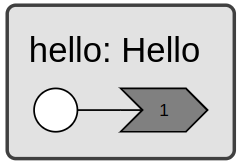

Getting Started


System Requirements
A manylinux_2_35 compliant Linux distribution. We recommend Ubuntu 22.04 or newer.
Python version 3.10, 3.11, 3.12, or 3.13
Installation
We recommend working in a virtual environment. Use the following commands to
create and load a new environment .venv.
$ python -m venv .venv
$ source .venv/bin/activate
Then install the xronos package.
$ pip install xronos
Hello World
This section shows you how to write a hello world program using xronos. Create a file called hello.py and paste the following content into it.
import xronos
class Hello(xronos.Reactor):
@xronos.reaction
def hello(self, interface):
interface.add_trigger(self.startup)
return lambda: print("Hello, World!")
def main():
env = xronos.Environment()
env.create_reactor("hello", Hello)
env.execute()
if __name__ == "__main__":
main()
from typing import Callable
import xronos
class Hello(xronos.Reactor):
@xronos.reaction
def hello(self, interface: xronos.ReactionInterface) -> Callable[[], None]:
interface.add_trigger(self.startup)
return lambda: print("Hello, World!")
def main() -> None:
env = xronos.Environment()
env.create_reactor("hello", Hello)
env.execute()
if __name__ == "__main__":
main()
Run the program:
$ python hello.py
Hello, World!
Let us break down the hello world program. The building blocks of the Xronos SDK are called
reactors. We can define a new reactor by subclassing the
xronos.Reactor base class. The example above defines a new reactor
class called Hello.
The behavior of a reactor is defined by its reactions. A new reaction can be
defined using the xronos.reaction decorator on a reactor method. The
decorated method is expected to accept a single argument of type
xronos.ReactionInterface and return a callable object (e.g. a function)
that implements an event handler. Our example reactor defines a single reaction
called hello:
@xronos.reaction
def hello(self, interface):
interface.add_trigger(self.startup)
return lambda: print("Hello, World!")
@xronos.reaction
def hello(self, interface: xronos.ReactionInterface) -> Callable[[], None]:
interface.add_trigger(self.startup)
return lambda: print("Hello, World!")
The execution of Xronos programs is event-based. All reaction handlers are
executed automatically in response to one or multiple triggering events. We use
the interface object to define which events trigger the reaction. In our example,
hello is triggered by the builtin startup event. As we
will discuss later, the interface may also be used to define effects, which
allow reactions to trigger new events.
The reaction handler returned by hello is a simple lambda function that prints
“Hello, World!”.
Finally, the main() function assembles and executes the program.
def main() -> None:
env = xronos.Environment()
env.create_reactor("hello", Hello)
env.execute()
We first instantiate a new xronos.Environment object, which we call
env. The environment manages the execution of any reactors created using the
create_reactor() factory method. In our example, we
create a new reactor called “hello” that is an instance of the class Hello.
Finally, execute() starts the execution of all
previously created reactors.
All Xronos programs can be rendered into a diagram that visualizes the reactors. This is the diagram for our hello world example.

See Diagram View for instructions on how to generate a diagram view.
Suggested development setup
Editor integration
We recommend using Visual Studio Code as the primary way to edit Xronos projects. VS Code is compatible with diagram generation and with on-target development or development on a virtual machine using SSH.
See Diagram View for instructions on how to install the Xronos VS Code extension and for the VS Code extension’s system requirements.
Telemetry dashboard
See Dashboard for setup instructions and system requirements for viewing telemetry data from Xronos applications.
Enabling type checking
To get the full benefit of the Xronos SDK, it is recommended to enable type checking using Pyright or Mypy. There are multiple ways to enable type checking.
Microsoft’s Pylance VS Code extension provides Pyright-based type checking,
which can be enabled by placing a pyrightconfig.json file such as the
following in the root of your project:
{
"python.analysis.typeCheckingMode": "standard",
"strict": ["*"]
}
Alternatively, you can use the following configuration in your pyproject.toml:
[tool.pyright]
strict = ["*"]
If you prefer to use Mypy instead of Pyright, the following pyproject.toml
configuration is known to be compatible with Xronos:
[tool.mypy]
exclude = ['venv', '.venv', 'build']
disallow_untyped_defs = true
disallow_any_unimported = true
no_implicit_optional = true
check_untyped_defs = true
warn_return_any = true
show_error_codes = true
warn_unused_ignores = true
Other ways of configuring type checking are likely to work, but may not have been tested for compatibility with xronos.